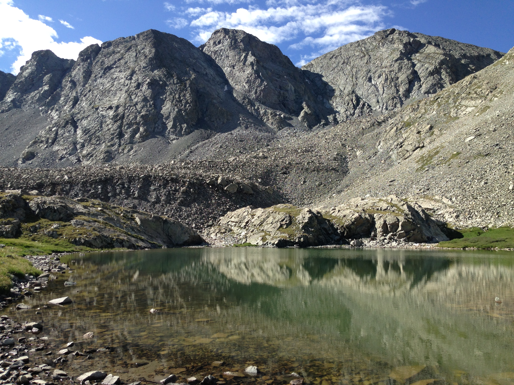
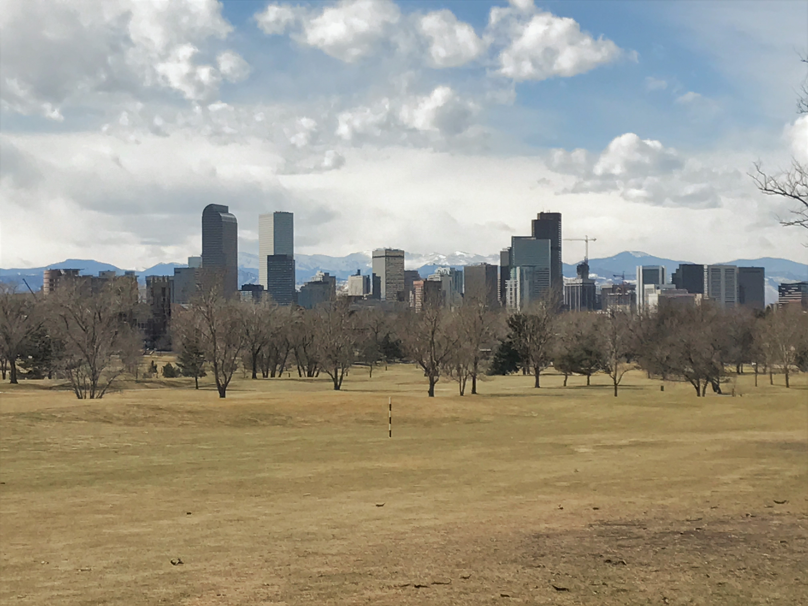
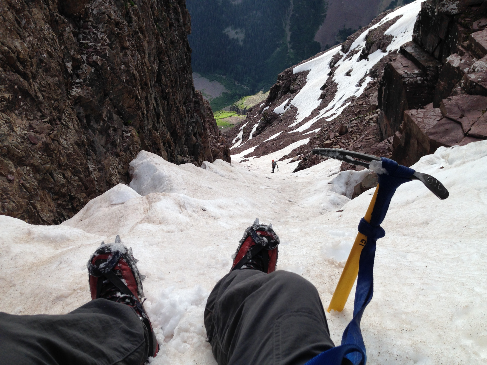
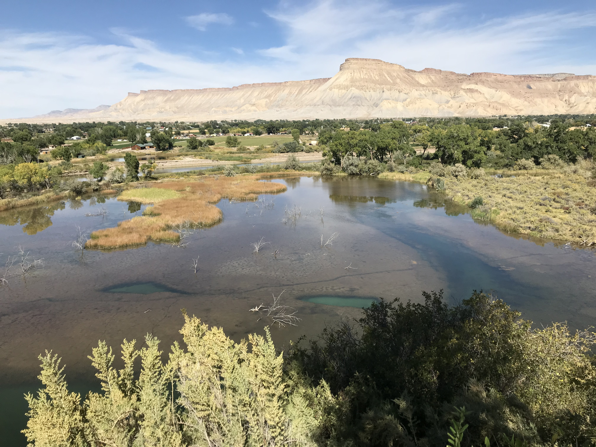
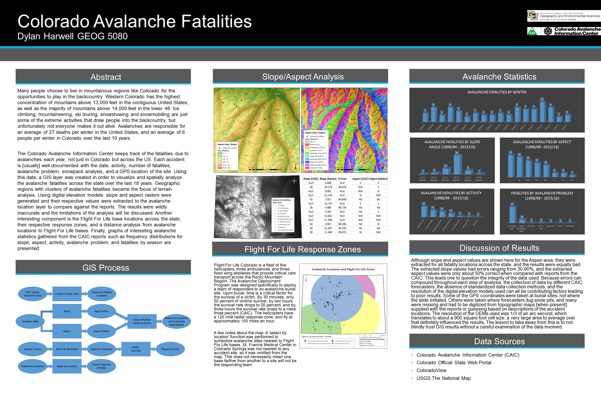
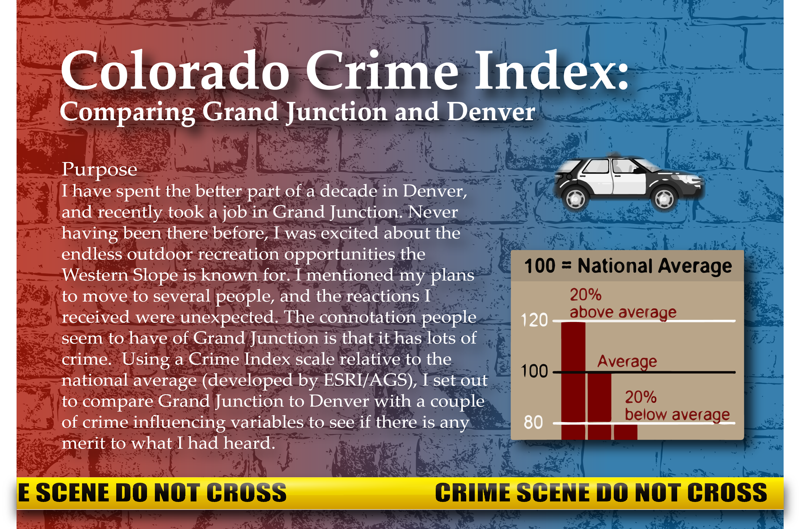
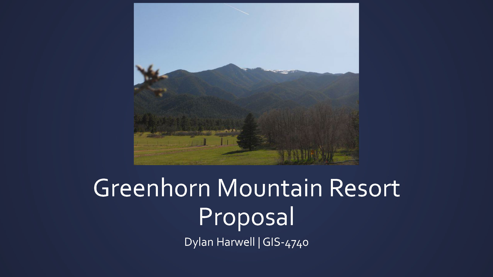
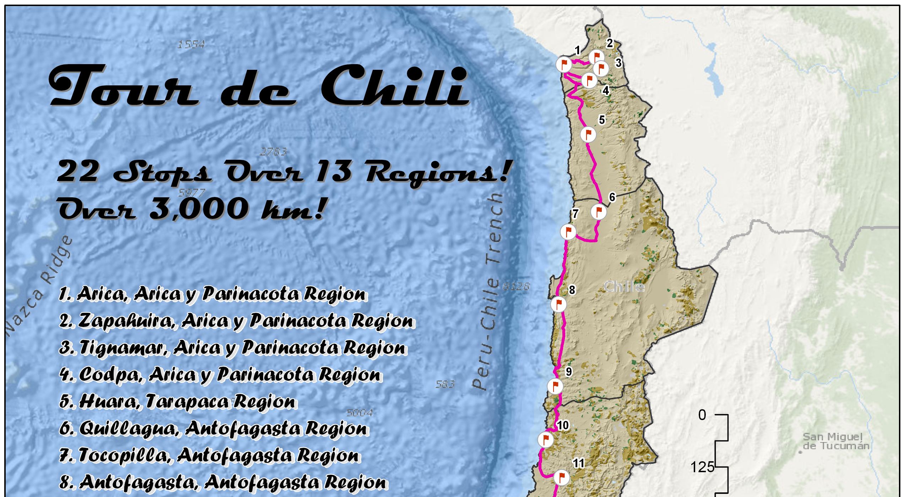

ABOUT
A bit about my education and experience...
Education
- University of Wisconsin Madison - MS GIS Development - 09/2018 to Present
- Courses: Graphic Design in Cartography - University of Denver - Graduate GIS Certificate - March 2018
- Courses: Cartography, Environmental GIS, Python Programming, Spatial Statistics, Remote Sensing I & II - University of Colorado Denver - BS Applied Physics - May 2014
Experience
- City of Grand Junction - GIS Technician - 08/2018 to Present
- Manage storm and sanitary sewer data: input from as-builts and redlines
- Support field crews by deploying web services for Collector
- Use asset management system and SQL Server to manage data and QA/QC
- Perform spatial analysis in support of fire department resource allocation and planning
- Provide ad-hoc mapping and data requests to various city departments
- Automate and schedule tasks on server, develop custom tools for GIS team using Python and C#/.NET - U.S. Geological Survey - GIS Student Contractor - 07/2017 to 07/2018
- Support the data management team of the Central Energy Resources Science Center
- Create and update metadata records following FGDC metadata standards
- Update, maintain, and troubleshoot legacy datasets
- Develop custom Python tools and apps for GIS and data management support
- Publications and data releases: Little Snake River and Red Desert Coal Assessment, U.S. Historic Oil and Gas Production
PORTFOLIO
Check out some work samples...







Check out some code samples...
GitHub Repositories
UW Madison class projects and more code samples on GitHub.
Python Tkinter GUI App
Application to parse and update queried server logs for entries missed by the query.
ArcGIS Pro SDK for .NET Add-Ins
Map tool to open an attribute-linked PDF from selected features. Editing tool to swap attribute values.
ArcMap Python Add-In
Same map tool to open an attribute-linked PDF from selected features, but for ArcMap.
Work Sample 1: USGS Wall Maps

Work Sample 3: Longform Infographic

Work Sample 7: NFPA Standards Map
Work Sample 8: Bike Tour Flyer

CONTACT
Want to know more? Get in touch with me...
Portland, OR
dharwellgis@gmail.com
dharwellgis@gmail.com